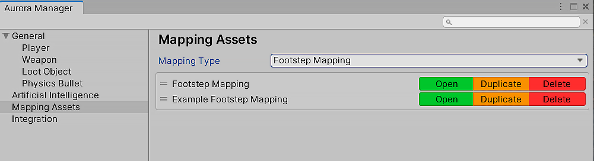

Overview
Aurora FPS has an advanced step sound system. You can configure what sounds will be played when moving on a specific surface. All sounds that the player plays are contained in the Footstep Mapping asset. You can create an unlimited number of these files and register various sounds there. The system supports processing sounds relative to the physical material and texture of Terrain.

Create Footstep Mappping
Method 1
1. Go to the folder in which you want to create the map.
2. Right-click and follow this path.
Create / Aurora FPS / Mapping / Player / Footstep
Method 2
1. Open Aurora Manager window.
Aurora FPS / Aurora Manager

2. Choose Mapping Asset section.
3. From the Mapping Type list, select Footstep Mapping. After that, all the input mapping assets that are in the project will be displayed. You can choose any of them and based on them create a new one by pressing the Duplicate button. This action will create a new map based on the map you have selected. The new map will have all the buttons that were contained in the parent map. This is convenient when you have configured a specific card and want to create a new one based on it, for example, for another platform or device.

Note
Don't forget to add the created map to your player. Find (add if is not added) FPFootstepSoundSystem component and add your new map in Mapping field.
Tip
You can create unlimited Footstep Mapping asset in project, however only one map can be assigned to the player. If the game is divided into levels, it is likely that there may be different types of surfaces in different levels that are not in others. So to improve performance, you can create different maps for different levels , so that you don 't have to store all possible surfaces in one map and use it for the entire game.
Configure Footstep Mapping
Select the map you want to edit.
Each property stores the sounds of a step, jump, and landing. They will only be played when the player is on a specific physical surface or terrain texture. You can add an unlimited number of sounds of steps, jumps and landings. As an example, two different types of properties are added to Footstep Mapping.
Physics Material Property
All types of colliders have the material property. This way you can create physical material for a specific type of object. The example uses the Pallet object, it has a Box Collider component, and the object consists of a tree. We created the Wood physical material for it and added in the Physics Material property in Box Collider component. We added the same Wood physical material to all other wooden objects.
| Property | Description |
|---|---|
| Key | Physics material, on which these sounds will be played. |
| Step | Sounds array, that will be played when player moveing on the ground. |
| Jump | Sounds array, that will be played when player jumping. |
| Land | Sounds array, that will be played when player landing. |
Terrain Texture Property
When you create a Terrain, you add different layers. Also you add the Diffuse texture to each layer. By this Diffuse texture system detect surface and play sounds. For example, we added a layer with a "Grass Diffuse" texture as the "Diffuse". This same texture was added to Footstep Mapping and defined there the sounds that will be played when moving, pressing and pressing on this texture.
| Property | Description |
|---|---|
| Key | Texture, on which these sounds will be played. |
| Step | Sounds array, that will be played when player moveing on the ground. |
| Jump | Sounds array, that will be played when player jumping. |
| Land | Sounds array, that will be played when player landing. |
Add Footstep Property
To add a new property, click on the Add Property button. Select the type of property you want to add. In the window that appears, insert the property (Physics Material / Texture) and click the Apply button.